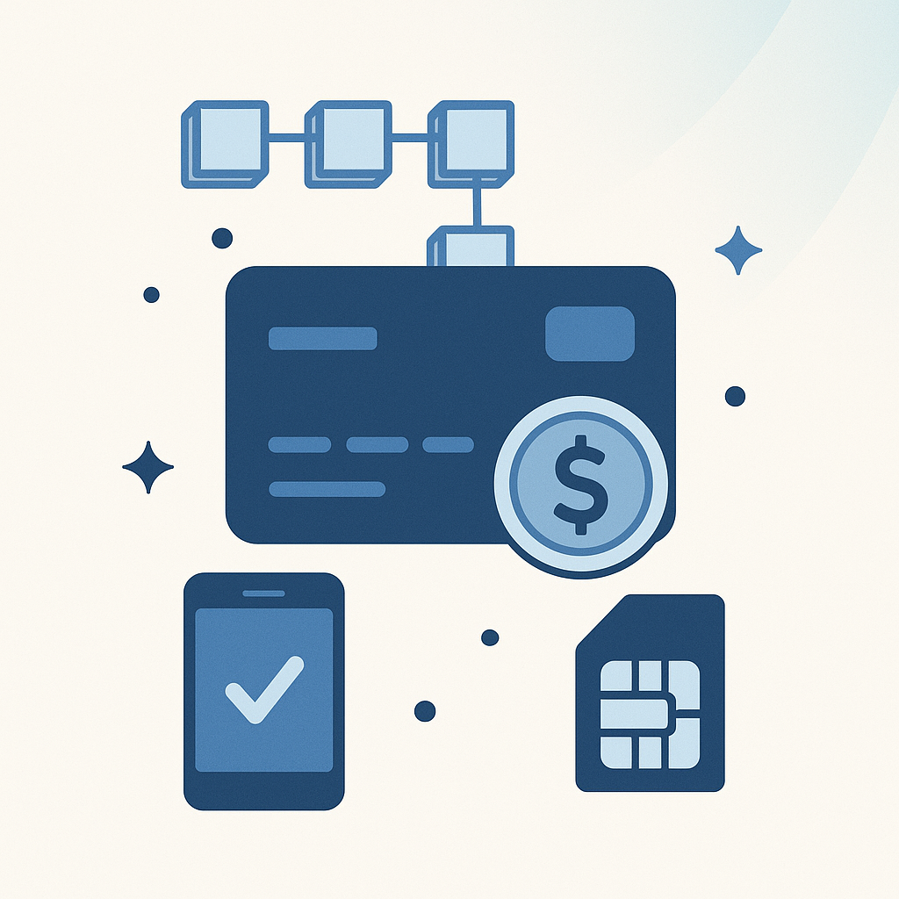
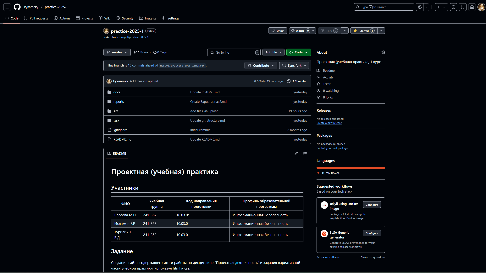
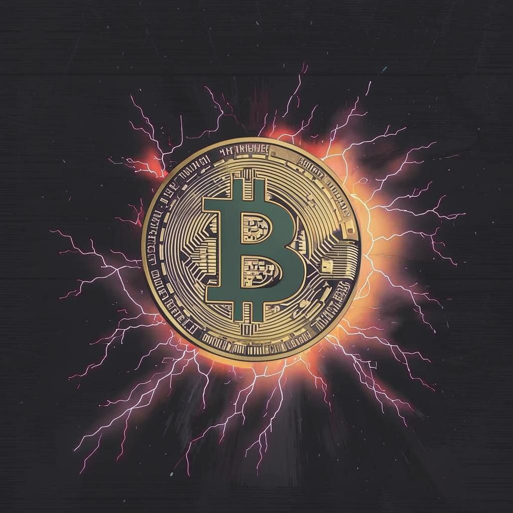

Аннотация проекта
Open Digital Cash – проект, посвящённый разработке ПО для использования цифровых наличных, позволяющего пользователям совершать быстрые, безопасные и низкозатратные транзакции.
В рамках этого проекта, наша группа создаёт сайт, служащий точкой входа для новых участников сообщества, предоставляя базовую информацию о технологии ODC:
- Принципы работы блокчейна.
- Особенности мобильного приложения.
- Роль защищенных SIM-карт в экосистеме.
Сайт уже доступен на GitHub Pages и будет обновляться по мере развития проекта.

О проекте
Open Digital Cash (ODC) — это инновационный проект, направленный на создание безопасной и эффективной системы цифровых наличных. Разработанный командой студентов Московского политехнического университета, проект объединяет передовые технологии, включая собственный блокчейн на Python, мобильное приложение на Kotlin и доверенное аппаратное обеспечение на базе SIM-карт.
Ключевые особенности
- Децентрализованная архитектура: блокчейн ODC обеспечивает прозрачность и надежность транзакций.
- Безопасность: криптографические алгоритмы (SHA-512, RSA-4096) и интеграция с NFC для защищенных платежей.
- Удобство: мобильное приложение с интуитивным интерфейсом и поддержкой P2P-переводов.
- Регуляторная совместимость: соответствие требованиям финансовых стандартов.
Этапы разработки
- Серверная часть на Django с API для обработки транзакций.
- Функционал NFC для бесконтактных платежей.
- Статический сайт (GitHub Pages) для представления проекта.
ODC — это шаг к будущему цифровых финансов, где скорость, безопасность и доступность становятся стандартом.
Журнал практики
Пост 1: Учебная практика: базовая часть
В рамках базовой части учебной практики наша команда выполнила следующие задачи:
1. Настройка Git и репозитория
- Создали групповой репозиторий на GitHub на основе предоставленного шаблона
- Освоили базовые команды Git: клонирование, коммит, пуш и создание веток
- Регулярно фиксировали изменения с осмысленными сообщениями к коммитам
- Примерное время: 5 часов
2. Написание документов в Markdown
- Оформили все материалы проекта (описание, журнал прогресса и др.) в формате Markdown
- Изучили синтаксис Markdown и подготовили необходимые документы
- Примерное время: 5 часов
3. Создание статического веб-сайта
Для создания сайта использовали только HTML и CSS. Создали новый сайт об основном проекте по дисциплине «Проектная деятельность» (Open Digital Cash).
Сайт включает следующие разделы:
- Домашнюю страницу с аннотацией проекта
- Страницу «О проекте» с описанием проекта
- Страницу «Участники» с описанием личного вклада каждого участника группы
- Страницу «Журнал» с постами о прогрессе работы
- Страницу «Ресурсы» со ссылками на полезные материалы
Все страницы оформлены графическими материалами (фотографиями, схемами, диаграммами, иллюстрациями).
Примерное время: изучение и настройка — 14 часов, дизайн и наполнение — 8 часов.

Пост 2: Учебная практика: вариативная часть
Задание: "Анализ требований к защищенности ОС в зависимости от целевого объекта"
В ходе работы были выполнены следующие задачи:
- Изучена классификация целевых объектов (АРМ, серверы, АСУ ТП, мобильные устройства и др.) и их особенности в контексте обеспечения ИБ.
- Изучены нормативные и методические документы (ФСТЭК, ФСБ, ГОСТ, профстандарты), регламентирующие требования к защите ОС.
- Проведено сравнение требований к защищённости ОС для разных типов объектов: уровни доверия, разграничение доступа, контроль целостности, обновления.
- Проанализированы примеры ОС, применяемых в разных средах (например, Windows Server, Astra Linux, Android), и оценены их соответствие требованиям.
Примерное время выполнения работы: 32-40 часов.

Журнал проекта
Пост 1: Влияние санкций на криптовалюты в России
Санкции против России оказали значительное влияние на различные сферы экономики, включая крипторынок. В 16 пакете санкций 13 российских банков отключили от SWIFT, что существенно ограничило возможности международных расчетов. В 8 пакете санкций россиянам запретили иметь криптовалюту на европейских кошельках, что привело к необходимости поиска альтернативных решений.
С одной стороны, ограничения на традиционные финансовые операции подтолкнули россиян к использованию криптовалют как альтернативного способа сохранения и перемещения средств. Биткоин, Ethereum и другие цифровые активы стали инструментом для обхода санкций и защиты сбережений. По данным аналитиков, объем P2P-торговли криптовалютами в России вырос на 40% после введения первых санкций.
С другой стороны, санкции ужесточили регулирование криптовалют со стороны государства. Российские власти активно обсуждают введение правил, ограничивающих использование криптовалют для расчетов внутри страны, но при этом разрешить их применение в международной торговле. Это создает неопределенность для инвесторов и майнеров, вынужденных адаптироваться к быстро меняющимся условиям.
Важно отметить, что санкции также повлияли на развитие отечественных криптопроектов. Российские разработчики начали активнее работать над созданием собственных блокчейн-решений и криптоплатформ, что может привести к формированию независимой экосистемы цифровых активов.
Пост 2: Энергетика и экология криптовалют: международные инициативы
Рост криптоиндустрии сопровождается увеличением энергопотребления. По последним данным, глобальное энергопотребление майнинга составляет около 0.5% от мирового потребления электроэнергии, что сопоставимо с энергопотреблением целых стран. Это вызывает значительные экологические проблемы, стимулируя страны и индустрию искать решения через международное сотрудничество и "зеленые" инициативы.
На климатическом саммите COP26 обсуждалось влияние майнинга на экологию. США, Канада и ЕС начали разрабатывать стандарты мониторинга энергопотребления криптоопераций. Китай, лидировавший в майнинге, запретил его, перераспределив мощности в регионы с возобновляемой энергетикой, такие как Северная Америка и Скандинавия.
Crypto Climate Accord объединяет более 250 компаний и регуляторов для достижения нулевого уровня выбросов CO₂ к 2030 году. Многие проекты переходят на энергоэффективные алгоритмы, например, Ethereum перешел с PoW на PoS, сократив энергопотребление на 99%. В Исландии и Канаде майнинг использует геотермальную и гидроэнергию, минимизируя экологический ущерб.
Инновационные решения включают использование избыточного тепла от майнинга для обогрева зданий, интеграцию с солнечными электростанциями и разработку новых, более энергоэффективных алгоритмов консенсуса. Компании также внедряют системы мониторинга углеродного следа для каждой транзакции.

Пост 3: Интеграция криптовалют в жизнь: от оплаты кофе до зарплат
Криптовалюты постепенно становятся частью повседневной жизни, трансформируя традиционные финансовые практики. В 2023 году более 15,000 компаний по всему миру начали принимать криптовалюты как средство оплаты, включая крупные ритейлеры, рестораны и сервисные компании.
В сфере розничной торговли наблюдается растущая тенденция к принятию криптовалют. Кофейни, рестораны и магазины внедряют QR-коды для мгновенных криптоплатежей. Например, Starbucks в некоторых регионах позволяет клиентам пополнять карты лояльности через Bitcoin. В Японии более 260,000 торговых точек принимают криптовалюты благодаря государственной поддержке.
В сфере занятости происходит революция в способах выплаты заработной платы. Компании, особенно в технологическом секторе, предлагают сотрудникам получать часть зарплаты в криптовалюте. Это не только привлекает технически подкованных специалистов, но и позволяет оптимизировать международные платежи, избегая высоких комиссий за переводы.
Государства также начинают интегрировать криптовалюты в свои финансовые системы. Сальвадор стал первой страной, признавшей Bitcoin законным платежным средством. Центральные банки разных стран разрабатывают CBDC (цифровые валюты центральных банков), что может привести к созданию гибридной финансовой системы, сочетающей традиционные и цифровые активы.
Однако интеграция криптовалют в повседневную жизнь сталкивается с рядом вызовов: волатильность курсов, регуляторная неопределенность и необходимость повышения финансовой грамотности населения. Решение этих проблем потребует совместных усилий регуляторов, бизнеса и образовательных учреждений.